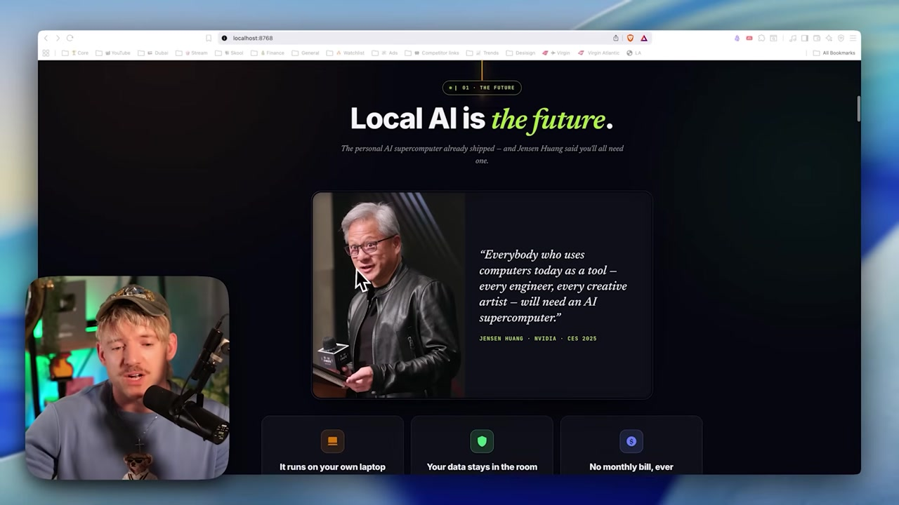

🌍 Por que IA local e o futuro
A nuvem foi para onde tudo correu na ultima decada. Agora o movimento e de volta: para a sua maquina. Neste modulo voce vai entender a "direcao de viagem" da industria e por que rodar IA localmente deixou de ser hobby de nerd para virar uma habilidade central.
🌍 A direcao e local
Pense no telefone dos anos 1990: o proposito dele era fazer ligacoes. Hoje o celular faz tudo — menos, talvez, ligar. Jensen Huang, CEO da NVIDIA, usa essa imagem para dizer que o mesmo vai acontecer com o computador: todos vamos ter um supercomputador de IA pessoal. A direcao de viagem e clara — a inteligencia esta vindo para a sua maquina.

🧭 A grande virada: nuvem → local
Tivemos o movimento de todo mundo indo para a nuvem. Agora a nuvem ja e "o antigo" e o pendulo volta para o local. Quem aprende a operar local hoje pega a onda no comeco.
- •Anos 1990–2010: tudo migra para servidores e datacenters (a nuvem).
- •Agora: hardware pessoal forte o bastante para rodar modelos capazes em casa.
- •Tendencia: cada profissional com seu "supercomputador de IA".
Novo aqui? "Modelo" e o cerebro de IA (o tipo de coisa que roda atras do ChatGPT). "Local" quer dizer que esse cerebro roda no SEU computador, e nao no servidor de uma empresa. O curso inteiro gira em torno dessa troca de lugar.
Conceitos-chave
O movimento estrutural da industria, da nuvem para o local.
A analogia do Jensen: todo mundo com um, como hoje todos tem um celular.
Aprender agora te coloca a frente da curva.
Laptops e desktops modernos ja rodam modelos capazes.
🔒 Ownership: voce e dono da inteligencia
O conceito-chave de tudo isso e ownership (posse). Quando o modelo roda na sua maquina, voce possui fisicamente a inteligencia e os dados. Nada e enviado para a OpenAI, para a Anthropic ou para qualquer empresa. A ideia e parar de alugar inteligencia e passar a ser dono dela.
✓ O que voce GANHA com posse
- ✓Os dados nunca saem de casa.
- ✓Nenhuma empresa observa o que voce faz.
- ✓Sem limites de uso impostos por terceiros.
- ✓Sem vendor lock-in: voce nao depende de um fornecedor.
✗ O que o modelo "alugado" cobra
- ✗Seus dados trafegam para o servidor da empresa.
- ✗Conta mensal e cobranca por token.
- ✗Rate limits e mudancas de regra fora do seu controle.
- ✗Se o servico cair ou mudar de preco, o problema e seu.
Posse nao significa que ninguem nunca vai usar a nuvem — significa que a escolha e sua. Voce decide o que fica privado e o que pode sair. Esse controle e o cerne do curso.
Conceitos-chave
Possuir o modelo e os dados, fisicamente.
O modelo dos servicos em nuvem — voce paga pelo uso.
Ficar preso a um fornecedor; local te liberta disso.
Voce decide o que e privado e o que pode sair.
💸 Custo zero por token
Em um servico de nuvem, voce paga por token — cada pedaco de texto que entra e sai tem um preco. Localmente, depois de baixar o modelo uma vez, cada uso e gratuito, para sempre. Nao ha medidor rodando.
📊 O que muda na pratica
- •$0 por token: você nao pensa duas vezes antes de pedir mais.
- •Sem rate limit: nenhum "voce atingiu seu limite, volte amanha".
- •Agentes 24/7: da para deixar tarefas rodando o dia inteiro sem susto na fatura.
💡 Dica pratica
O unico "custo" do local e o hardware que voce ja tem e a energia. Por isso vale baixar, testar e apagar modelos a vontade — explorar e barato. Trate isso como diversao, nao como obrigacao.
Conceitos-chave
A unidade de cobranca da nuvem (vamos detalhar no modulo 1.4).
Uso gratuito apos o download.
Nenhum teto de uso imposto.
Investe no hardware uma vez, em vez de pagar por uso.
✈️ Funciona offline, em qualquer lugar
Como o modelo roda na sua maquina, ele nao precisa de internet. Voce pode estar a 5 mil metros num aviao, num lugar sem sinal ou com a rede caindo — a IA continua respondendo. A disponibilidade deixa de depender de uma conexao ou de um servico estar no ar.
A esquerda, sem rede a chamada para o servidor falha; a direita, o modelo local responde mesmo offline — a inteligencia esta na sua maquina, nao do outro lado da internet.
Historia real do video: voando de Dubai para LA, com a internet ainda nao configurada, dava pra continuar trabalhando com o modelo local no laptop. Esse e o tipo de liberdade que o offline traz.
Conceitos-chave
A IA esta sempre la, sem depender de rede.
Servico fora do ar ou queda de luz nao te paralisam.
Aviao, off-grid, area sem sinal — tudo funciona.
A computacao acontece onde voce esta.
🏢 Casos reais: dados sensiveis e compliance
Para muita gente, o local nao e preferencia — e necessidade. Quando voce lida com dados de cliente, financas, notas de saude ou codigo proprietario, mandar isso para um servico externo pode ser proibido por lei ou por contrato. Rodar local resolve isso na raiz: o dado nunca sai.
Dados de cliente e financas
Informacao que nao pode vazar para terceiros — fica 100% na maquina.
Saude e IP proprietario
Notas de saude e segredos de negocio (o "OpenAI 2.0" que ninguem pode saber).
Ambientes regulados
SOC 2, GDPR, ISO 27001 — compliance fica muito mais simples quando o dado nao trafega.
Novo aqui? "Compliance" e estar de acordo com regras e leis (de privacidade, seguranca etc.). "GDPR" e a lei europeia de protecao de dados; "SOC 2" e "ISO 27001" sao certificacoes de seguranca da informacao. Local facilita todas porque o dado simplesmente nao sai.
Conceitos-chave
Voce mantem total controle sobre onde o dado vive.
Um agente para a equipe inteira, com dados de cliente isolados.
SOC 2, GDPR, ISO 27001 ficam mais simples.
Setores onde mandar dado pra fora simplesmente nao e opcao.
🧭 Sem ideologia: a ferramenta certa pra cada tarefa
Aqui vem a honestidade que guia o curso: local nao e religiao. A filosofia e simples — traga o melhor para o trabalho, e troque quando algo deixar de ser o melhor. Quando os modelos de fronteira (na nuvem) entregam mais para uma tarefa dificil, use-os. Quando privacidade ou custo pesam mais, va de local.
⚠️ O erro a evitar
Ser ideologico ("sempre local" ou "sempre nuvem") te faz perder. Forcar local numa tarefa que exige potencia maxima frustra; mandar dado sensivel pra nuvem por preguica pode ser ilegal. O criterio e o trabalho, nao a bandeira.
🧩 Pense em porcentagens
Imagine 100% do seu trabalho com IA. Uma fatia exige privacidade absoluta (dados de cliente). Outra exige a melhor resposta possivel (um problema cabeludo). Outra so precisa ser rapida e barata. Cada fatia tem a ferramenta ideal — e o Hermes deixa voce alternar entre elas.
No modulo 1.6 isso vira os tres modos (Vault, Connected, Cloud), e na Trilha 3 voce monta o fluxo que alterna entre eles.
Conceitos-chave
"Siga o que funciona", sem dogma.
Local e nuvem coexistem no mesmo fluxo.
Cada fatia do trabalho pede algo diferente.
Os modelos de ponta (na nuvem) ainda vencem nas tarefas mais dificeis.
Auto-checagem (opcional): qual frase resume melhor a filosofia do curso?
🎯 Resumo do modulo
Proximo modulo:
1.2 — O vocabulario: LLM, agente e SO de IA